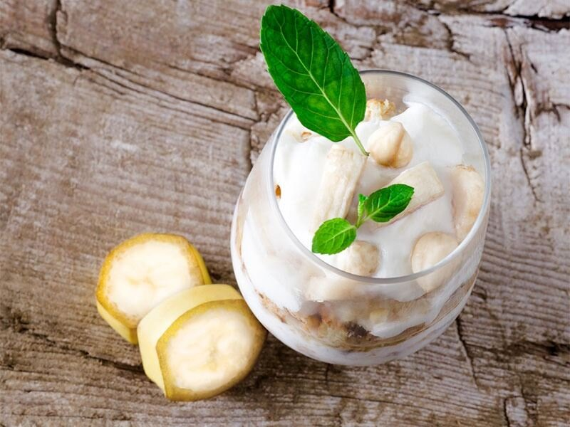

Fransız mutfağına özgü bir tatlı tarifi ile karşınızdayız.
Vogue kelime olarak 'rağbet gören, moda olan' anlamına geliyor.
Hiç pişirilmeden hazırlanan vogue tatlısı ise, bu ismi sonuna kadar hak ediyor.
Ana malzemeleri krem şanti, bebe bisküvisi ve muz olan bu tatlı, isteğe göre
farklı meyvelerle de hazırlanabilir. Tatlı kalıplarına eklendikten sonra
üzerini çikolata sosu veya meyve sosu ile zenginleştirebilirsiniz.
Ortalama 15-20 dakikada hazırlanan vogue tatlısı,
çat kapı gelen misafirlere kısa sürede sunabileceğiniz bir tariftir.
Kaç Kişilik: 6 Kişilik Hazırlama Süresi: 15 dakika Pişirme Süresi: 5 dakika
1) Bir kabın içerisine bir bardak soğuk süt ve iki paket krem şantiyi dökün.
2) Bu karışımı mikser ile çırptıktan sonra soğuması için buzdolabına koyun.
3) 1 su bardağı ılık sütün içerisine granül kahveyi dökün ve kahve eriyene kadar karıştırın.
4) Bebe bisküvilerini kahveli karışıma batırın ve servis kaselerinin dibine 3 adet yerleştirin.
5) Muzları verev şeklinde dilimledikten sonra, kaselerin kenarına yerleştirin.
6) Soğuyan krem şantiyi kasenin içerisine dökün. Üzerine tekrar kahveli karışımda ıslattığınız bisküvilerden koyun.
7) Bisküvilerin üzerine 1 kaşık daha krem şanti ekleyin.
8) Çikolatalı sos isteyenler; Tereyağı ve çikolatayı benmari usulü eritin.
9) Eriyen çikolataların içine 2 kaşık süt ekleyin.
10) Çikolata sosunu hazırladığınız kaselerin en üst kısmına 1 kaşık dökün.
11) Üstlerini antep fıstığı ile süsledikten sonra servis edebilirsiniz.
Afiyet Olsun...